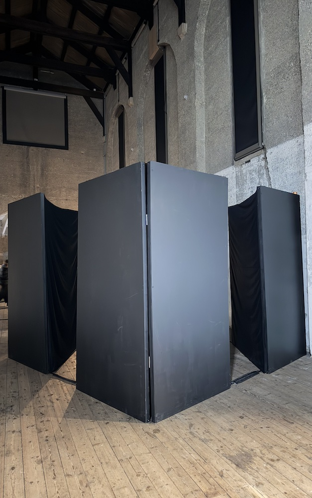
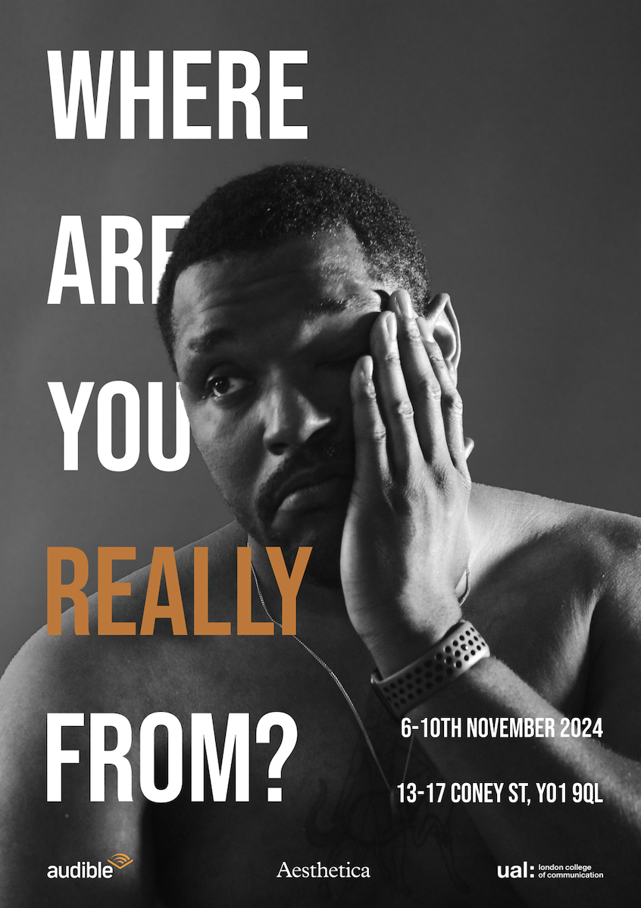

Sound Sculpture, 2024
(Dis)connection is a quadraphonic sound installation, along with by four, large sound sculptures.
It explores trauma through technology and destructive interference.
Trauma disrupts not only the psychological and physical connection but also the perception of time, creating a delayed recognition of threat that can repeat uncontrollably and destructively (Caruth, 1996).
The installation embodies this uncontrollable quality by using technology not just to resemble trauma, but to extend and amplify its behaviors.
Sound installation, 2024
The perpetual question, "Where are you really from?" does not have a simple answer.
I conducted eight interviews with individuals from diverse backgrounds to expose what the question really means.
Despite participants growing up in different environments, they shared common phrases and experiences. I arranged the audio to create the illusion of an ongoing conversation among them, connecting their personal stories through eight central themes.
These included, belonging, racism, the emotional impact of being “othered,” and uncovering alternative approaches to this question. I further connect these narratives with bespoke piano compositions. In this way, I present myself as the ninth voice, reflecting on my experiences growing up in Norway as a Korean adoptee.
The installation consists of eight speakers on stands. Each speaker represents one of the voices. They are arranged in a five-diameter circle and invite the audience to enter in the center of the space. During live performances, I play the piano softly across all speakers, surrounding listeners with a blend of voices and music.
2024
The perpetual question, "Where are you really from?" does not have a simple answer.
I conducted eight interviews with individuals from diverse backgrounds to expose what the question really means.
Despite participants growing up in different environments, they shared common phrases and experiences. I arranged the audio to create the illusion of an ongoing conversation among them, connecting their personal stories through eight central themes.
These included, belonging, racism, the emotional impact of being “othered,” and uncovering alternative approaches to this question. I further connect these narratives with bespoke piano compositions. In this way, I present myself as the ninth voice, reflecting on my experiences growing up in Norway as a Korean adoptee.
The installation consists of eight speakers on stands. Each speaker represents one of the voices. They are arranged in a five-diameter circle and invite the audience to enter in the center of the space. During live performances, I play the piano softly across all speakers, surrounding listeners with a blend of voices and music.